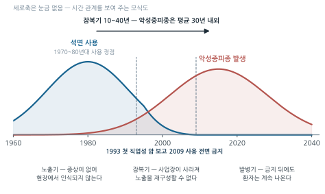
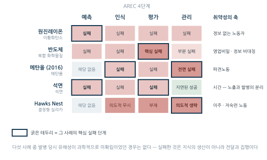

15주차. 직업병 사례연구
한국과 세계의 대표 직업병 사건을 AREC의 눈으로 다시 읽기
학습목표
이 주를 학습한 후 여러분은 다음을 할 수 있어야 합니다:
- 대표적 직업병 사건의 원인 유해인자, 노출 경로, 건강영향을 설명할 수 있다
- 각 사례에서 예측·인식·평가·관리(AREC) 중 어느 단계가 실패했는지 근거를 들어 분석할 수 있다
- 사건이 제도 변화(법 개정, 기준 신설, 판례 변경)로 이어진 과정을 설명할 수 있다
- 잠복기, 정보 접근성, 고용 형태가 직업병의 발견과 인정에 미치는 영향을 논의할 수 있다
- 새로운 산업의 잠재 유해인자에 대해 예측(Anticipation)의 관점에서 토론할 수 있다
1. 사례를 읽는 틀 · 원진레이온 이황화탄소 중독 — 한국 산업위생사의 분수령 · 반도체 산업과 직업성 암 — 첨단 산업의 보…
1.1 사례를 읽는 틀
15주 동안 우리는 산업위생의 도구들을 하나씩 배웠다. 마지막 주의 과제는 그 도구들을 거꾸로 사용하는 것이다 — 이미 일어난 사건을 앞에 놓고, “어느 도구가, 어느 단계에서, 왜 작동하지 않았는가”를 묻는다.
1주차에서 배운 AREC 순환을 다시 꺼내자.
| ① 예측 Anticipation | ② 인식 Recognition | ③ 평가 Evaluation | ④ 관리 Control |
|---|---|---|---|
| 위험을 미리 내다봤는가 | 현장에서 알아봤는가 | 측정·진단이 작동했는가 | 알고도 막았는가 → 다시 ① |
직업병 사건은 이 순환의 어딘가가 끊어진 결과다. 그리고 끊어진 지점은 사건마다 다르다. 어떤 사건에서는 위험이 아예 예측되지 않았고(예측 실패), 어떤 사건에서는 위험이 교과서에 이미 실려 있었는데도 현장에서 아무도 알아보지 못했으며(인식 실패), 어떤 사건에서는 측정 기록 자체가 없어 수십 년 뒤 인과관계를 다투게 되었고(평가 실패), 어떤 사건에서는 알면서도 막지 않았다(관리 실패).
이 장의 모든 사례는 동일한 세 단계 틀로 분석한다.
| 단계 | 질문 |
|---|---|
| ① 사건 개요 | 원인 물질은 무엇인가? 노출 경로는? 어떤 건강영향이 나타났는가? |
| ② AREC 분석 | 예측·인식·평가·관리 중 어느 단계가, 왜 실패했는가? |
| ③ 제도적 결과 | 사건 이후 법·기준·제도는 어떻게 바뀌었는가? |
직업병의 역사에는 반복되는 시차가 있다. 노동자가 병드는 시점과, 그 고통이 과학적 사실로 인정되는 시점 사이의 간격이다. 퍼시발 포트가 굴뚝청소부의 음낭암을 보고한 것은 1775년이지만(1주차 §2.2), 어린이 굴뚝청소부를 보호하는 법이 처음 만들어진 것은 1788년, 노동 가능 연령이 실효성 있게 높아진 것은 그로부터 다시 수십 년 뒤였다. 디젤엔진 배기가스는 1930년대에 상용화되었지만 IARC가 1군 발암물질로 분류한 것은 2012년이다.
이 시차를 결정하는 변수 중 하나가 정보의 불평등이다. X선의 유해성은 노출된 당사자가 과학자였기에 사용 후 십수 년 만에 알려졌지만, 디젤 배기가스의 유해성은 노출된 당사자가 탄광 노동자였기에 80년이 걸렸다. 이 장의 사례들에서 “누가 노출되었고, 그들이 위험 정보에 접근할 수 있었는가”를 계속 눈여겨보라 — 파견노동자, 하청노동자, 어린이 노동자가 반복해서 등장한다 (윤진하, 「고통이 사실이 되기까지」).
1.2 원진레이온 이황화탄소 중독 — 한국 산업위생사의 분수령
사건 개요
원진레이온은 경기도 남양주(당시 미금)에 있던 비스코스레이온(인조견사) 제조 공장으로, 1960년대에 설립되어 1993년 폐업할 때까지 수천 명이 거쳐 갔다. 비스코스 공법은 펄프(셀룰로스)를 이황화탄소(CS₂)와 반응시켜 비스코스 용액을 만든 뒤 산욕(酸浴)에서 실로 뽑아내는 공정이다. 방사(紡絲) 공정에서는 이황화탄소와 황화수소가 함께 발생한다.
| 항목 | 내용 |
|---|---|
| 원인 물질 | 이황화탄소(CS₂) — 휘발성이 큰 액체, 지용성으로 신경조직 친화적 |
| 노출 경로 | 호흡기 흡입이 주 경로, 피부 흡수도 가능 |
| 노출 상황 | 방사 공정의 개방 작업, 환기 불충분, 고온다습 환경 |
| 급성 영향 | 고농도에서 마취 작용, 정신이상(환각), 사망 가능 |
| 만성 영향 | 다발성 신경염, 뇌경색증, 협심증 등 심혈관 질환, 신부전, 망막 미세혈관류, 정신장해 |
이황화탄소 중독의 무서움은 표적장기의 광범위함에 있다. 중추·말초신경계, 심혈관계, 신장, 눈, 생식기능까지 침범한다 — 혈관을 전신적으로 손상시키는 물질이기 때문이다. 퇴직한 지 여러 해가 지난 노동자에게서 뇌혈관 질환이 나타나는 일도 드물지 않았다.
문제가 사회적으로 드러난 것은 1980년대 후반이다. 팔다리가 마비되고 말이 어눌해진 퇴직 노동자들이 잇따라 나타났고, 1988년 — 15세 노동자 문송면 군의 수은중독 사망이 사회를 흔든 바로 그 해 — 원진레이온 직업병 문제가 본격적으로 공론화되었다. 피해 노동자와 가족들의 수년에 걸친 싸움 끝에 이황화탄소 중독은 집단 직업병으로 인정되었고, 인정된 피해자는 수백 명 규모에 이르렀다.
AREC 분석
| 단계 | 판정 | 근거 |
|---|---|---|
| 예측 | 실패 | 이황화탄소의 독성은 19세기 유럽 레이온 산업에서 이미 확립된 지식이었다. 설비 도입 시점에 위험은 “새로운 것”이 아니었다 |
| 인식 | 실패 | 노동자들은 자신이 다루는 물질의 이름과 위험을 알지 못했고, 증상이 나타나도 직업과 연결하지 못했다 |
| 평가 | 실패 | 신뢰할 수 있는 작업환경측정과 특수건강진단이 사실상 작동하지 않았다. 노출 기록의 공백은 뒷날 인정 다툼을 길게 만들었다 |
| 관리 | 실패 | 밀폐·국소배기 등 공학적 대책이 불충분한 채 개방 작업이 지속되었다 |
무엇: ① 원진레이온 공장의 외경 또는 방사(紡絲) 공정 작업 장면, ② 1988~1990년대 피해 노동자와 가족의 집회·농성 등 직업병 인정 운동을 보여 주는 보도사진 중 한 장.
왜: 이 사건이 “한국 산업위생사의 분수령”인 이유는 기술적 실패만이 아니라 피해자들이 스스로 문제를 사회적 사실로 만들어 낸 과정에 있다. 공정 사진은 개방 작업·환기 부재라는 노출 조건을 한눈에 보여 주고, 운동 사진은 §1.2의 제도 변화가 어디에서 왔는지를 설명한다.
출처 후보: 원진직업병관리재단·녹색병원 소장 자료(직접 이용허락 문의), 민주화운동기념사업회 오픈아카이브(이용조건 표시 확인), 노동 관련 사진 아카이브, 신문사 사진 데이터베이스(유상 이용허락 필요). 한국산업안전보건공단 발간물의 사건 관련 도판도 후보다.
주의: 피해 노동자 개인의 얼굴이나 병상 모습이 식별되는 사진은 사용하지 않는다. 생존 피해자와 유족이 있는 비교적 최근의 사건이며, 질병 상태의 노출은 당사자의 존엄과 유족의 감정을 해칠 수 있다. 게재가 불가피하면 유족·재단의 명시적 동의를 받고, 얼굴이 드러나지 않는 구도(뒷모습, 손, 전경)를 우선한다. 저작권 역시 대부분 살아 있으므로 “인터넷에서 구한 사진”을 그대로 쓰지 않는다.
대안: 비스코스 공법의 공정 흐름(펄프 → 이황화탄소 반응 → 방사 → 산욕)과 CS₂·H₂S 발생 지점을 표시한 자체 모식도로 대체한다.
이 사건은 네 단계가 모두 실패한 사례다. 그러나 가장 뼈아픈 대목은 예측 단계다. 이황화탄소 중독은 미지의 질병이 아니었다 — 유럽과 일본의 레이온 공장에서 이미 겪고, 기록하고, 대책까지 세운 질병이었다. 설비와 공정은 수입되었지만 그 공정에 붙어 있어야 할 안전 지식은 함께 수입되지 않았다. 1주차에서 본 “지식은 저절로 전달되지 않는다”는 명제의 가장 큰 국내 사례다.
원진레이온의 방사 설비는 애초 해외에서 중고로 들여온 것이었고, 공장이 문을 닫은 뒤 설비는 다시 다른 나라로 팔려 나갔다. 유해공정은 규제가 느슨하고 노동이 값싼 곳으로 이동하는 경향이 있다. 한 나라의 관리 강화가 위험의 소멸이 아니라 위험의 수출로 끝날 수 있다는 것 — 이것이 산업위생이 국제 문제인 이유다. (종합 토론 질문 3에서 다시 다룬다.)
제도적 결과
원진레이온 사건은 한국 산업보건 제도의 방향을 바꾸었다.
- 직업병 인정의 확대 — 퇴직 후 발병한 만성 직업병도 업무상 질병으로 인정받는 길이 넓어졌다. “노출 시점과 발병 시점의 분리”가 제도에 반영되기 시작한 계기다
- 작업환경측정·특수건강진단 제도의 정비 — 측정과 건강진단의 실효성에 대한 사회적 요구가 높아졌고, 측정기관 정도관리 등 신뢰성 확보 장치가 강화되었다 (14주차)
- 전문 기관의 탄생 — 피해자 보상 재원을 바탕으로 원진직업병관리재단이 설립되고, 직업환경의학 진료와 노동자 건강운동의 거점(녹색병원 등)으로 이어졌다
- 사회적 인식의 전환 — “직업병은 개인의 불운이 아니라 관리되지 않은 작업환경의 결과”라는 명제가 이 사건을 통해 한국 사회의 상식이 되었다
1.3 반도체 산업과 직업성 암 — 첨단 산업의 보이지 않는 노출
사건 개요
2007년, 반도체 공장 생산라인에서 일하던 20대 초반의 노동자 황유미 씨가 급성 백혈병으로 사망했다. 같은 라인에서 일했던 동료도 같은 병으로 세상을 떠났다는 사실이 알려지면서, “가장 깨끗한 공장”으로 불리던 반도체 클린룸이 직업성 암 논쟁의 한복판에 서게 되었다. 이후 반도체·LCD 공정에서 일한 노동자들의 백혈병, 림프종, 뇌종양, 다발성 경화증 등 산재 신청이 이어졌다.
| 항목 | 내용 |
|---|---|
| 의심 유해인자 | 세정용 유기용제(과거 벤젠 함유 가능성), 감광액(포토레지스트)과 그 부산물, 비소 등 도핑 물질, 전리방사선, 교대근무 |
| 노출 경로 | 호흡기 흡입, 피부 접촉. 웨이퍼를 화학조에 직접 담그던 수작업 시절의 노출이 특히 문제 |
| 건강영향 | 백혈병·림프종 등 조혈기계 암, 뇌종양, 다발성 경화증 등 희귀질환 |
| 핵심 난점 | 과거 노출자료 부재, 다수 물질의 저농도 복합 노출, 영업비밀에 따른 정보 접근 제한 |
클린룸의 역설을 이해해야 한다. 클린룸의 “클린”은 제품(웨이퍼)을 먼지로부터 보호한다는 뜻이지, 사람을 화학물질로부터 보호한다는 뜻이 아니다. 공기를 순환·재사용하는 밀폐 구조는 오히려 화학물질 증기를 실내에 머무르게 할 수 있고, 방진복은 분진용이지 유기용제 증기를 막아 주지 않는다.
무엇: 방진복(bunny suit)을 입은 작업자가 클린룸에서 웨이퍼를 다루는 장면. 설비가 밀폐되어 있고 공기가 순환되는 구조가 보이면 좋다.
왜: “클린룸의 역설”은 사진이 있어야 설득력이 생긴다 — 학생들은 방진복과 흰 조명을 보고 “깨끗하다”고 느끼는데, 바로 그 직관이 §1.3에서 지적한 예측 실패(“첨단 = 깨끗함 = 안전”)의 출발점이기 때문이다. 사진을 먼저 보여 주고 “이 옷이 무엇을 막아 주는가”를 묻는 방식으로 쓸 수 있다.
출처 후보: 위키미디어 커먼즈의 CC BY/CC0 클린룸 사진, 미국 국립연구소(NIST, NASA 등) 공개 이미지(연방정부 저작물), 대학 반도체 연구시설 홍보자료(이용허락 문의). 특정 기업의 공장 사진은 피한다 — 소송이 진행된 사건을 다루는 장이므로 특정 사업장을 지목하는 인상을 주지 않는 것이 좋다.
대안: 클린룸의 공기 흐름(HEPA 급기 → 작업면 → 순환)과 화학물질 증기의 체류를 화살표로 표시한 단면 모식도. “제품을 지키는 청정과 사람을 지키는 청정은 다르다”를 그림 하나로 보여 줄 수 있다.
AREC 분석
| 단계 | 판정 | 근거 |
|---|---|---|
| 예측 | 실패 | “첨단 = 깨끗함 = 안전”이라는 등식이 신산업의 위험 예측을 가로막았다. 신공정 도입 시 부산물·중간생성물의 독성 검토가 미흡했다 |
| 인식 | 실패 | 노동자들은 자신이 다루는 화학물질의 조성을 알 수 없었다(영업비밀). 상품명만 있고 성분을 모르는 물질로는 인식이 시작될 수 없다 |
| 평가 | 핵심 실패 | 문제가 된 과거 공정의 노출 측정 기록이 남아 있지 않았다. 기록의 공백은 “노출이 없었다”가 아니라 “판단할 수 없다”를 뜻하지만, 그 불이익은 오랫동안 노동자가 떠안았다 |
| 관리 | 부분 실패 | 수작업 화학조 시절의 국소배기·보호구 관리가 불충분했다. 공정 자동화 이후 개별 노출은 감소 |
이 사례의 축은 평가의 실패다. 1주차에서 배운 직업병 인정 4대 요건을 떠올려 보라 — 노출 확인과 충분한 노출량·기간을 입증할 수 있는 것은 측정 기록뿐이다(1주차 §3.2). 반도체 논쟁에서 그 기록이 없었다. 게다가 문제가 되는 노출은 단일 물질의 기준 초과가 아니라 여러 물질의 저농도 복합·누적 노출이었다. “물질별 노출기준과의 비교”라는 전통적 평가 틀 자체가 시험대에 올랐다.
반도체·LCD 공장에서 일한 뒤 다발성 경화증이 발병한 노동자의 소송에서 대법원은 산재 인정의 문턱을 크게 낮추었다. 판결의 논지는 산업위생의 언어로 옮기면 다음과 같다.
- 역학적 상관관계의 고려 — 특정 산업·사업장에서 해당 질환의 발병률이 일반 인구보다 높다면 이를 상당인과관계의 근거로 쓸 수 있다
- 평가 실패의 책임 전환 — 과거 노출자료가 불충분하거나 사업주가 정보를 제공하지 않아 생긴 입증의 공백을 노동자의 불이익으로 돌려서는 안 된다
- 복합 노출의 인정 — 개별 물질이 노출기준 이하라도 여러 유해인자에 장기간 누적 노출되었고 교대근무 등이 겹쳤다면 업무상 재해로 인정할 수 있다
“측정 기록이 없으면 사업주가 불리해진다”는 원칙은, 사업주에게 평가(측정·기록)를 성실히 수행할 강력한 유인을 만들었다. 판례가 산업위생 실무를 견인한 사례다.
제도적 결과
- 증명책임의 완화 — 위 판결 이후 희귀질환·첨단산업 사건에서 역학조사의 한계와 정보 비대칭을 노동자에게 전가하지 않는 판정 원리가 자리 잡았다
- 사회적 합의와 사과 — 2018년 조정을 통해 회사의 사과와 보상, 재발 방지 지원이 이루어졌다
- 화학물질 알권리의 확대 — 영업비밀을 이유로 한 성분 비공개에 대한 규제가 강화되었다(MSDS 비공개 승인 심사 — 14주차)
- 평가 틀의 반성 — 저농도 복합 노출, 교대근무 같은 비전통적 인자를 다룰 수 있는 노출평가·역학조사 방법론의 필요성이 분명해졌다
1.4 메탄올 중독 사건(2016) — 파견노동과 산업위생
사건 개요
2016년 초, 수도권의 스마트폰 부품 하청공장들에서 20~30대 파견노동자 여러 명이 잇따라 시력을 잃었다. 원인은 메탄올(메틸알코올) 급성중독이었다. 휴대전화 부품을 깎는 CNC(컴퓨터 수치제어) 가공 공정에서 절삭·세척액으로 에탄올 대신 값싼 메탄올을 사용했고, 노동자들은 에어건으로 부품에 묻은 메탄올을 날려 보내며 고농도 증기와 미스트에 그대로 노출되었다.
| 항목 | 내용 |
|---|---|
| 원인 물질 | 메탄올(CH₃OH) — 국내 노출기준 TWA 200 ppm, 피부 흡수 가능(Skin 표기) |
| 노출 경로 | 증기·미스트의 흡입, 피부 접촉. 에어건 분사가 노출을 증폭 |
| 독성 기전 | 체내에서 포름알데히드를 거쳐 포름산으로 대사되어 시신경과 중추신경 손상 (4주차 대사활성화의 전형) |
| 건강영향 | 시신경 손상에 의한 시야 결손·실명, 중추신경 손상, 대사성 산증 |
| 작업 조건 | 국소배기 미비, 호흡보호구 미지급, MSDS 교육 부재, 야간·장시간 노동 |
이 사건이 충격적인 이유는 몰라서 당한 사고가 아니라는 점이다. 메탄올의 실명 독성은 한 세기 넘게 알려진, 독성학 교과서 첫머리의 지식이다. 대체물질(에탄올, 수용성 절삭유)도 존재했다. 문제는 지식도 대체재도 아닌, 그 지식이 현장에 도달하는 경로가 끊어져 있었다는 것이다.
AREC 분석
| 단계 | 판정 | 근거 |
|---|---|---|
| 예측 | 해당 없음(이미 확립된 지식) | 메탄올의 독성은 예측이 필요 없는, 오래전에 확립된 사실이었다 |
| 인식 | 실패 | 노동자들은 자신이 쓰는 액체가 메탄올인지, 메탄올이 무엇인지 알지 못했다. MSDS는 게시되지 않았고 교육도 없었다 |
| 평가 | 실패 | 작업환경측정 대상임에도 측정이 이루어지지 않았거나 실태를 반영하지 못했다. 파견노동자는 특수건강진단의 관리망에서도 벗어나 있었다 |
| 관리 | 전면 실패 | 관리 위계의 어느 층도 작동하지 않았다 — 대체(에탄올) 가능함에도 미실시, 국소배기 없음, 보호구 없음 |
이 사건의 축은 고용 형태가 AREC 순환을 끊는다는 것이다. 파견노동자는 사용사업주(공장)와 고용사업주(파견업체) 사이에 놓인다. 공장은 “우리 직원이 아니다”라고 하고, 파견업체는 작업장을 통제하지 못한다. 안전보건 책임이 두 사업주 사이의 틈으로 떨어지는 구조다. 게다가 단기 파견노동자는 증상이 나타나기 전에 현장을 떠나는 일이 많아, 집단 발병으로 이어지기 전까지 문제가 보이지 않는다.
석면·직업성 암처럼 잠복기가 긴 질병에 관심이 쏠리는 동안, “측정하고 환기하면 즉시 막을 수 있는” 급성 중독이 21세기 한국에서 집단으로 발생했다. 관리 수준이 낮은 소규모 하청·파견 사업장은 19세기형 직업병과 21세기형 직업병이 공존하는 공간이다. 산업위생 자원이 어디에 배분되어야 하는가를 묻게 하는 사례다.
제도적 결과
- 전국 일제점검 — 고용노동부가 동종 CNC 가공 사업장을 일제 점검하여 추가 피해자와 메탄올 사용 사업장을 확인하고 사용 중단·대체를 조치했다
- 파견노동 규제의 환기 — 제조업 직접생산공정에 대한 파견 제한이 실효적으로 집행되지 않는 현실이 드러났고, 불법파견 단속과 사용사업주의 안전보건 책임 강화 논의로 이어졌다
- 임시건강진단의 활용 — 집단 발병 시 노출 노동자를 추적하여 건강진단을 명령하는 제도가 실제로 가동된 사례가 되었다
- 산재 인정 — 피해 노동자들은 업무상 재해로 인정받았고, 사건은 이후 파견·하청 노동자 보호 논의(위험의 외주화)의 상징적 사례가 되었다
1.5 석면 — 잠복기가 긴 유해인자의 관리
사건 개요
석면(asbestos)은 글자 그대로 “돌솜” — 광물이면서 섬유다. 불에 타지 않고 전기가 통하지 않으며 값이 쌌기에, 20세기 내내 건축자재(슬레이트, 보온재), 브레이크 라이닝, 방직, 조선 등 산업 전반에 쓰였다. 한국에서는 1970~80년대에 사용이 정점에 달했다.
| 항목 | 내용 |
|---|---|
| 원인 물질 | 석면 — 섬유상 광물, IARC 1군 발암물질 |
| 노출 경로 | 호흡성 섬유의 흡입 (길고 가는 섬유가 폐포·흉막까지 도달, 2주차 섬유상 분진 계수법 참조) |
| 건강영향 | 석면폐증(진폐), 폐암, 악성중피종(흉막·복막), 후두암, 난소암 |
| 잠복기 | 10~40년. 악성중피종은 평균 30년 내외로, 대부분의 원인이 석면 노출 |
| 국내 규제 | 단계적 규제를 거쳐 2009년 사용 전면 금지 |
석면 문제의 본질은 시간이다. 오늘의 노출이 30년 뒤의 암이 된다. 이 시차는 산업위생의 전 단계를 교란한다 — 증상이 없으니 인식되지 않고, 발병 시점에는 측정할 작업장이 이미 사라졌으니 평가할 수 없으며, 금지(관리)를 해도 향후 수십 년간 환자는 계속 나온다. 국내 첫 직업성 암 공식 보고가 1993년의 석면 악성중피종이었고, 사용이 금지된 2009년 이후에도 중피종 발생은 오히려 증가 추세를 보였다 — 과거 노출의 청구서가 이제 도착하고 있는 것이다.

그림 16.1 는 이 시차가 AREC의 각 단계를 어떻게 교란하는지를 보여 준다. 노출기에는 증상이 없으니 위험이 체감되지 않아 인식이 시작되지 않고, 잠복기에는 이미 사업장이 사라져 노출을 재구성할 자료가 없으므로 평가가 막히며, 발병기에는 관리(금지)가 이미 끝난 뒤에도 환자가 계속 나온다. 그래서 잠복기가 긴 유해인자의 관리는 사업장이 아니라 사람을 따라가는 제도 — 건강관리수첩·카드, 30년 기록 보존 (14주차) — 를 필요로 한다.
40대 중반에 흉막 악성중피종이 발생한 환자가 있었다. 산재 신청을 했지만 불승인되었다 — 직업력에는 “20대부터 재봉틀 작업”이라고만 적혀 있었다. 직업환경의학 의사가 다시 물었다. “30년 전에는 어떤 일을 하셨어요?” “30년 전이면 초등학생 때요?”
환자는 초등학교 6학년 때 가정 형편 때문에 자동차용 모터 공장에서 1년간 자재 나르는 일을 했다. 그 자재는 모터 절연용 플라스틱에 섞는 석면이었다. “너무 흩날려서 한꺼번에 많이 갖다 놓지 못하고 계속 반복해서 날랐다”고 했다. 회사 방문과 동료 진술로 30년 전 노출이 객관적 사실로 확인되었고, 심사 끝에 업무상 질병으로 인정되었다 — 그러나 통보 전에 환자는 세상을 떠났다.
“유해물질에 노출되셨나요?”라는 질문은, 답하는 사람이 유해물질에 대한 지식을 갖고 있을 때에만 작동한다. 이 환자는 자신이 나른 것이 석면인지 몰랐고, 그래서 첫 조사에서 노출력은 “없음”이 되었다. 직업력 청취가 왜 산업위생·직업환경의학의 핵심 기술인지(1주차 라마찌니), 그리고 왜 묻는 쪽이 공정과 물질을 알아야 하는지를 보여주는 사례다 (윤진하, 「고통이 사실이 되기까지」).
AREC 분석
| 단계 | 판정 | 근거 |
|---|---|---|
| 예측 | 실패 | 석면폐증은 20세기 초, 발암성은 1950~60년대에 국제적으로 확립되었다. 한국의 사용 확대는 그 이후였다 — 알려진 위험 위에서 산업이 성장했다 |
| 인식 | 실패 | 잠복기가 길어 현장에서는 위험이 체감되지 않았고, 소규모 사업장·건설 현장의 노동자는 취급 물질이 석면인지도 모르는 경우가 많았다 |
| 평가 | 실패 | 수십 년 뒤 발병 시점에는 과거 노출을 재구성할 자료가 없다. 노출 재구성(retrospective exposure assessment)이 인정 절차의 최대 난관이 되었다 |
| 관리 | 지연된 성공 | 전면 금지라는 관리 위계 최상위 수단(제거)이 결국 실행되었으나, 국제적 지식 확립 시점보다 수십 년 늦었다. 기존 건축물 속 석면의 해체·제거 관리는 현재진행형이다 |
제도적 결과
석면은 “잠복기가 긴 유해인자를 제도가 어떻게 다루어야 하는가”에 대한 교과서적 답안을 만들어 냈다.
- 사용 금지(2009) — 관리 위계의 정점인 제거. 대체물질 존재가 전제였다
- 석면피해구제법(2010년 제정) — 직업적 노출을 입증하기 어려운 환경성 피해자(공장 인근 주민, 석면 광산 지역 주민)까지 구제하는 별도 체계. “산재 입증”의 틀 밖에 있는 피해를 제도가 인정한 사례
- 석면안전관리법 — 건축물 석면조사, 해체·제거 작업의 등록·감리 등 남아 있는 석면의 전 생애 관리 체계
- 건강관리카드 — 과거 노출자에게 퇴직 후에도 정기 건강진단을 제공. “노출 시점의 사업장”이 아니라 노출된 사람을 따라가는 관리로, 잠복기가 긴 유해인자 관리의 원형이다 (14주차)
1.6 해외 사례: Gauley Bridge(Hawks Nest 터널) 규폐증 참사
사건 개요
1930년대 초, 미국 웨스트버지니아주 골리 브리지(Gauley Bridge) 인근에서 수력발전용 터널(Hawks Nest Tunnel) 공사가 진행되었다. 뚫어야 할 암반은 결정형 실리카 함량이 매우 높은 규암층이었다. 회사는 이 암석을 발전소 원료(합금용 규소)로 쓸 만큼 순도가 높다는 것을 알고 있었다.
대공황기의 일자리를 찾아 모여든 노동자들 — 상당수가 남부에서 온 흑인 이주 노동자였다 — 은 건식 천공(물 분사 없이 구멍을 뚫는 방식)으로 분진이 자욱한 터널 안에서 일했다. 습식 천공과 환기가 이미 알려진 대책이었고 현장 감독과 방문 기술자는 마스크를 썼다는 증언이 남아 있지만, 노동자에게는 보호구가 지급되지 않았다.
| 항목 | 내용 |
|---|---|
| 원인 물질 | 결정형 실리카(유리규산) 분진 — 호흡성 분획이 폐포에 도달 (1주차 §3.1) |
| 노출 경로 | 건식 천공·발파 직후 재진입으로 인한 초고농도 분진 흡입 |
| 건강영향 | 급성·속진성 규폐증 — 통상 10년 이상 걸리는 규폐증이 수개월~수년 내 발병, 호흡부전으로 사망 |
| 피해 규모 | 사망자는 수백 명으로 추정되나 정확한 수는 끝내 확정되지 못했다 — 사망자 다수가 기록 없이 매장되었다 |
규폐증은 보통 저농도 장기 노출로 10년 이상에 걸쳐 진행되는 병이다(5주차). 이 현장의 노출은 그 규칙을 깨뜨릴 만큼 극단적이었다 — 수개월 만에 숨이 차기 시작해 몇 년 안에 사망하는 급성 규폐증이 집단 발생했다. 미국 역사상 최악의 산업재해 중 하나로 꼽힌다.
무엇: 1930~32년 Hawks Nest 터널 공사 현장 사진 — 터널 내부의 건식 천공 작업, 분진이 자욱한 갱내, 또는 노동자들의 집단 사진.
왜: “분진이 자욱한 터널에서 물 없이 구멍을 뚫었다”는 서술은 사진 한 장으로 즉시 이해된다. 특히 현장 감독은 마스크를 쓰고 노동자는 쓰지 않았다는 증언과 함께 보면, §1.6의 “의도적 무시”가 추상적 판정이 아니라 눈에 보이는 사실이 된다.
출처 후보: 미국 의회도서관(Library of Congress) 사진 컬렉션, 국립기록보관소(NARA), 웨스트버지니아주 기록보관소(West Virginia State Archives)의 Hawks Nest 관련 컬렉션. 1930년대 미국 연방기관 촬영물은 퍼블릭 도메인인 경우가 많으나 주(州)·민간 아카이브 소장본은 개별 이용조건을 확인해야 한다. Cherniack(1986)의 도판은 저작권이 살아 있으므로 원 소장처를 찾아 이용허락을 받는다.
주의: 희생자 다수가 기록 없이 매장된 사건이다. 유해·묘지·시신 관련 이미지는 쓰지 않고, 노동 장면과 현장에 한정한다. 사망자 수는 교재 본문과 같이 “추정”임을 캡션에 명시한다.
대안: 건식 천공과 습식 천공의 분진 발생 차이를 나란히 비교한 모식도(같은 작업, 물 분사 유무만 다른 두 컷)로 대체한다.
AREC 분석
| 단계 | 판정 | 근거 |
|---|---|---|
| 예측 | 해당 없음(확립된 지식) | 규폐증과 그 대책(습식 천공, 환기)은 1930년 당시 이미 확립되어 있었다. 회사는 암석의 높은 실리카 함량도 알고 있었다 |
| 인식 | 의도적 무시 | 위험을 몰랐던 것이 아니라 알면서 노동자에게 알리지 않았다. 정보의 비대칭이 극단적이었다 |
| 평가 | 부재 | 분진 농도 측정도, 노동자 건강 감시도 없었다. 사망 원인은 폐렴 등으로 기록되어 통계에서 지워졌다 |
| 관리 | 의도적 생략 | 습식 천공은 공기(工期)를 늦춘다는 이유로 생략되었다. 관리 수단이 없어서가 아니라 비용 때문에 쓰지 않은 사례 |
이 사례가 이 장에 있는 이유는, AREC의 실패가 언제나 “몰라서”가 아님을 보여주기 때문이다. 지식, 측정 기술, 관리 수단이 모두 존재해도 그것을 쓰게 만드는 힘 — 법적 강제, 노동자의 알권리, 전문가의 윤리 — 이 없으면 순환은 돌지 않는다. 취약한 노동자(이주·비정규·저숙련)일수록 그 힘의 공백에 놓이기 쉽다는 점에서, 이 1930년대 미국의 사건은 2016년 한국의 메탄올 사건과 정확히 같은 구조를 갖는다.
제도적 결과
- 의회 청문회(1936) — 참사가 언론과 의회로 옮겨져 규폐증이 전국적 의제가 되었다
- 전국 규폐증 회의와 “Stop Silicosis” 캠페인 — 미국 노동부가 규폐증 예방 캠페인을 벌였고, 각 주의 산재보상법에 진폐성 질환이 포함되는 흐름이 가속되었다
- 분진 관리 기준의 발전 — 습식 작업·환기·호흡보호구로 이어지는 분진 관리의 표준 관행이 확립되어 갔다. 결정형 실리카는 이후 발암물질(IARC 1군)로 분류되었고, 노출기준은 지금도 계속 강화되고 있다
- 역사적 교훈으로서의 지위 — 이 사건은 미국 산업보건 교과서에서 “예방 가능한 참사”의 대명사가 되었다 — 지식이 아니라 의지가 없었던 사건
1.7 종합 — 실패는 어느 단계에서 일어나는가
다섯 사례를 한 표에 놓고 비교하자.
| 사례 | 유해인자 | 잠복기 | 핵심 실패 단계 | 취약성의 축 | 제도적 결과 |
|---|---|---|---|---|---|
| 원진레이온 | 이황화탄소 | 수년~수십 년 | 예측 (지식 미이전) + 전 단계 | 정보 없는 노동자 | 직업병 인정 확대, 측정·건진 제도 정비 |
| 반도체 | 복합 화학물질 | 수년~수십 년 | 평가 (기록 부재, 복합 노출) | 영업비밀·정보 비대칭 | 증명책임 완화(2015두3867), 알권리 강화 |
| 메탄올(2016) | 메탄올 | 급성 | 인식·관리 (지식 전달 단절) | 파견노동 | 일제점검, 파견 규제 환기 |
| 석면 | 석면 | 10~40년 | 예측·평가 (잠복기의 교란) | 시간 — 노출과 발병의 분리 | 전면 금지, 피해구제법, 건강관리카드 |
| Hawks Nest | 결정형 실리카 | 급성(속진성) | 관리 (의도적 생략) | 이주·저숙련 노동 | 청문회, 규폐증 예방 캠페인 |
같은 내용을 AREC의 격자 위에 놓으면, 실패가 어느 칸에서 일어났는지가 한눈에 들어온다.

그림 16.2 에서 두 가지를 읽을 수 있다. 첫째, 비어 있는 칸이 거의 없다 — 한 단계만 무너지는 일은 드물고, 대개 앞 단계의 실패가 뒷 단계를 무력하게 만든다(인식하지 못한 물질은 측정 대상이 되지 않고, 측정하지 않은 노출은 관리의 근거가 되지 않는다). 둘째, 예측 열에는 “해당 없음”이 두 칸 있다. 메탄올과 Hawks Nest에서는 예측할 것이 남아 있지 않았다 — 유해성이 이미 확립된 지식이었기 때문이다. 예측이 필요 없을 만큼 잘 알려진 위험에서도 사람이 죽었다는 사실이, 아래의 첫 번째 패턴으로 이어진다.
패턴이 보인다.
첫째, 순수한 “지식의 부재”로 일어난 사건은 드물다. 다섯 사례 중 발병 당시 유해성이 과학적으로 미확립이었던 경우는 없다. 실패한 것은 지식의 생산이 아니라 지식의 전달과 집행이었다. 그래서 산업위생 전문가의 일은 측정과 계산만이 아니라, 아는 것을 현장에 도달시키는 일이기도 하다.
둘째, 위험은 취약한 곳으로 흐른다. 어린이(석면 사례, 굴뚝청소부), 파견노동자(메탄올), 이주노동자(Hawks Nest), 하청노동자 — 위험 정보에 접근하기 어렵고 거부할 힘이 없는 집단이 반복해서 피해자가 된다. 유해공정 자체도 규제가 느슨한 곳(소규모 사업장, 다른 나라)으로 이동한다.
셋째, 기록이 곧 권리다. 반도체와 석면 사례에서 수십 년 뒤 다툼을 결정한 것은 측정과 직업력의 기록이었다. 오늘의 작업환경측정 결과서 한 장이 30년 뒤 누군가의 직업병 인정 여부를 좌우할 수 있다 — 2~3주차에서 배운 측정과 기록 보존이 단순한 행정 절차가 아닌 이유다.
넷째, 제도는 사건의 뒤를 따라온다. 다섯 사례 모두에서 법과 기준은 피해가 사회적으로 가시화된 뒤에 바뀌었다. 이 시차를 줄이는 유일한 방법이 예측(Anticipation)이다 — 새 물질, 새 공정, 새 고용형태가 현장에 들어오기 전에 위험을 묻는 것. AREC의 첫 글자가 이 과목의 마지막 메시지이기도 한 이유다.
1주차 AAIH 윤리강령의 한 줄 요약은 “근로자의 건강 보호가 1차적·궁극적 책임이다”였다. 이 장의 사례들은 그 문장이 시험되는 순간들을 보여준다 — 측정 기록이 남지 않았을 때, 성분이 영업비밀일 때, 공기(工期)가 습식 천공보다 급할 때. 제도의 공백에서 마지막 방어선은 결국 현장 전문가의 판단과 기록이다.
요약
| 항목 | 핵심 내용 |
|---|---|
| 분석 틀 | ① 사건 개요(물질·경로·건강영향) → ② AREC 실패 단계 진단 → ③ 제도적 결과 |
| 원진레이온 | 이황화탄소(CS₂) — 신경·심혈관·신장 침범. 공정은 수입되었으나 안전 지식은 수입되지 않음. 직업병 인정 확대의 계기 |
| 반도체 | 복합 화학물질 저농도 노출 + 기록 부재 = 평가의 실패. 대법원 2015두3867로 증명책임 완화 |
| 메탄올 | 확립된 지식이 파견노동의 틈에서 전달되지 않음. 대체 가능 물질에 의한 급성 실명 |
| 석면 | 10~40년 잠복기가 AREC 전 단계를 교란. 금지(2009)·피해구제법·건강관리카드로 대응 |
| Hawks Nest | 결정형 실리카 건식 천공 — 알면서 생략한 관리. “지식이 아니라 의지의 부재” |
| 네 가지 패턴 | 지식보다 전달의 실패 · 위험은 취약한 곳으로 · 기록이 곧 권리 · 제도는 사건의 뒤를 따른다 |
종합 토론 질문
연습문제 대신, 정답이 하나로 정해지지 않은 질문들을 놓고 토론한다. 각 질문에 대해 사례의 사실관계 → AREC 개념 → 자신의 판단 순서로 논거를 구성해 보라.
예측의 한계 — 반도체 사례에서 “당시 과학 수준으로는 예측할 수 없었다”는 반론이 가능한가? 예측(Anticipation)의 책임 범위는 어디까지인가? “모든 신물질을 유해하다고 가정하라”는 사전주의 원칙(precautionary principle)을 산업 현장에 그대로 적용할 수 있는가?
기록의 부재는 누구의 책임인가 — 대법원 2015두3867 판결은 노출자료의 공백을 노동자의 불이익으로 돌리지 말라고 했다. 이 원칙을 소규모 영세 사업장(측정 능력 자체가 부족한)에 적용할 때 생기는 문제는 무엇이고, 어떻게 보완해야 하는가?
위험의 수출 — 원진레이온의 설비는 해외에서 들어와 해외로 나갔다. 석면 산업도 규제가 강한 나라에서 약한 나라로 이동해 왔다. 유해공정의 국제 이전을 막기 위해 산업위생 전문가, 기업, 국가가 각각 할 수 있는 일은 무엇인가?
고용 형태와 AREC — 메탄올 사건에서 파견이라는 고용 형태는 AREC의 네 단계를 각각 어떻게 약화시켰는가? 플랫폼 노동(배달, 대리운전 등)에서는 같은 문제가 어떤 형태로 나타나겠는가? “사업장” 중심으로 설계된 산업위생 제도는 어떻게 바뀌어야 하는가?
잠복기와 정의(正義) — 석면 피해자의 상당수는 노출 당시의 사업장이 사라진 뒤에 발병한다. 석면피해구제법처럼 “입증 문턱을 낮춘 별도 구제”와 “산재보험의 원칙 유지” 사이의 균형을 어떻게 잡아야 하는가?
다음 사례는 무엇인가 — 이차전지 제조, 재활용 산업, 데이터센터, 기후변화에 따른 옥외 폭염 노동 중 하나를 골라, 이 장의 분석 틀 ①(예상되는 유해인자·노출 경로)과 ②(어느 단계가 취약한가)를 미리 작성해 보라. 사건이 일어나기 전에 쓰는 사례 분석 — 그것이 곧 예측이다.
조별 과제 안내 — 사례 AREC 분석 발표
기말고사 전 마지막 과제다. 조별로 직업병 사례 하나를 선정하여 이 장의 분석 틀로 분석하고 발표한다.
과제 요건
| 항목 | 내용 |
|---|---|
| 편성 | 4~5인 1조 |
| 사례 선정 | 이 장에서 다루지 않은 사례 권장 (예: 문송면 수은중독, 가습기 살균제, 급식실 조리흄 폐암, 타워크레인·조선업 하청 사고, 해외 사례 등). 이 장의 사례를 고를 경우 본문과 다른 관점·추가 자료 필수 |
| 분량 | 발표 15분 + 질의 5분, 슬라이드 10장 내외 |
| 제출물 | 발표 자료 + 분석 요약문 2쪽 (발표 전일까지) |
분석 요약문 필수 구성 — 본문의 틀을 그대로 따른다.
- 사건 개요 — 원인 유해인자, 노출 경로, 건강영향, 피해 규모 (확실하지 않은 수치는 “추정”임을 명시하고 출처를 밝힐 것)
- AREC 분석 — 네 단계 각각에 대해 실패/부분 실패/작동 여부를 판정하고 근거 제시. 핵심 실패 단계 하나를 지목하고 그 이유를 논증할 것
- 제도적 결과 — 사건 이후의 법·기준·판례 변화. 변화가 없었다면 “왜 없었는가”를 분석할 것
- 재발 방지 제안 — 관리 위계(1주차 §2.1)에 따라 우선순위를 매긴 대책 1~3가지
- 참고자료 목록 — 언론 보도만이 아니라 역학조사 보고서, 판결문, 학술 문헌 중 1건 이상 포함
평가 기준: 사실관계의 정확성(수치·연도의 출처 확인) 30%, AREC 분석의 논리성 40%, 제도 분석과 제안의 구체성 20%, 발표·질의응답 10%.
“회사가 나빴다”로 끝나는 분석은 이 과제의 목표가 아니다. 어느 단계에서, 어떤 도구가, 왜 작동하지 않았는지를 특정할 수 있어야 같은 실패를 막는 설계가 가능하다. 분노는 출발점이 될 수 있지만, 분석의 결론은 언제나 구체적인 개입 지점이어야 한다.
참고문헌
- 윤진하. 「고통이 사실이 되기까지: 노동건강지식의 역사」. 연세대학교.
- Waldron, H. A. (1983). A brief history of scrotal cancer. British Journal of Industrial Medicine, 40(4), 390.
- 대법원 2017. 8. 29. 선고 2015두3867 판결 (반도체·LCD 다발성 경화증 사건).
- Cherniack, M. (1986). The Hawk’s Nest Incident: America’s Worst Industrial Disaster. Yale University Press.
- IARC (2012). Arsenic, Metals, Fibres, and Dusts. IARC Monographs Vol. 100C. (석면·결정형 실리카)
- 한국산업안전보건공단. 직업병 사례 및 역학조사 보고서. KOSHA.
- 안연순, 강성규 (2009). Occupational cancer surveillance in Korea. Industrial Health, 47, 113–122.
- Plog, B. A., & Quinlan, P. J. (2012). Fundamentals of Industrial Hygiene (6th ed.). National Safety Council.